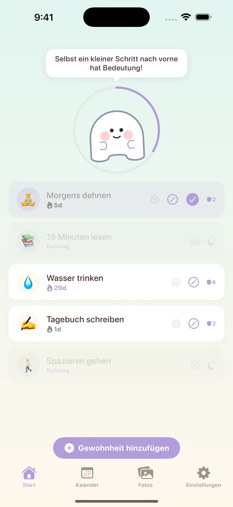
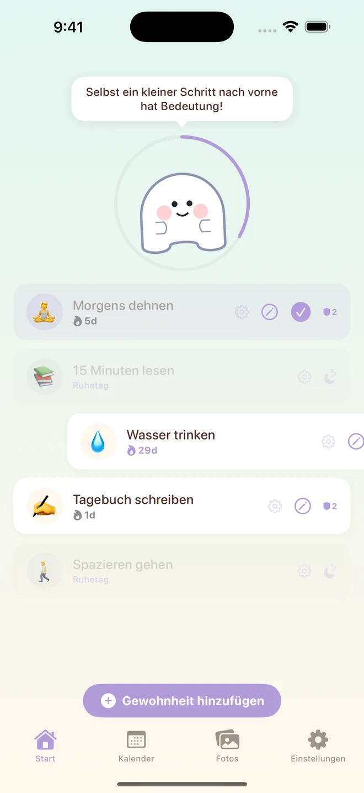
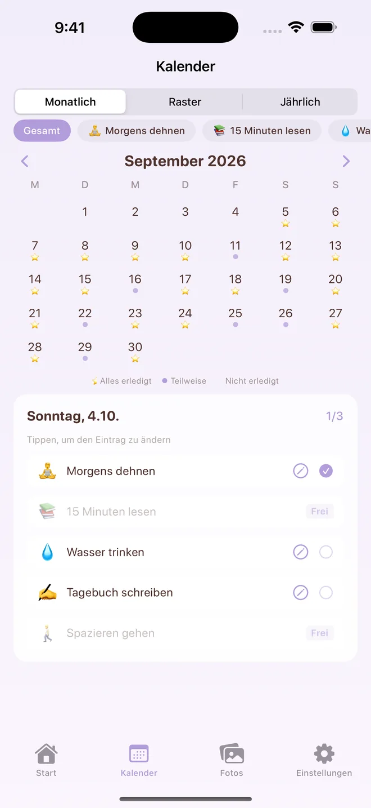
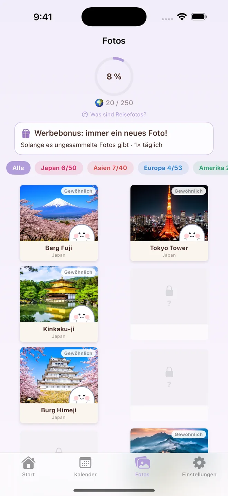

In deinem eigenen Rhythmus
Wähle aktive Wochentage, Erinnerungen und den Beginn deines Tages. Im Widget auf dem Home-Bildschirm siehst du den heutigen Fortschritt.
Ein bisschen Magie für deine Gewohnheiten.
Ein bisschen Zuspruch für jeden kleinen Erfolg. Mit Marutto werden tägliche Gewohnheiten zu Reiseerinnerungen. Ganz in deinem Tempo.
Kostenlos im App Store ladeniPhone & iPad / Kostenlos mit Werbung / Ohne Konto
Funktionen

01 — LITTLE BY LITTLE
Einmal dehnen. Eine Seite lesen. Ein Glas Wasser. Fang klein an – Marutto begleitet dich dabei.

A SMALL STEP FORWARD
Wische eine Gewohnheit, um sie als erledigt zu markieren. Du kannst die Markierung rückgängig machen oder frühere Einträge im Kalender ändern.
Tippe für einen kleinen Erfolg
Website-Demo
An guten und an schwierigen Tagen macht Marutto dir Mut.
EVERY LITTLE DAY COUNTS
Entdecke den Monatskalender, das Gewohnheitsraster und den Jahresverlauf. Zu jeder Gewohnheit kannst du auch Notizen hinzufügen.
Kostenlos im App Store laden
02 — A WORLD OF LITTLE REWARDS
Reisefotos zum Sammeln

Erledige alle Gewohnheiten des Tages und erhalte ein Reisefoto. Entdecke 250 Fotos mit Maruttos Reisetagebüchern und spannenden Fakten. Du kannst auch eine Videowerbung ansehen, um ein Bonusfoto zu erhalten.
Öffne ein gesammeltes Foto und tippe auf Teilen, um das Foto und das Tagebuch zusammen mit dem App-Link und #MaruttoTracker zu teilen.

Bleib dran. Sammle Reiseerinnerungen.
Kostenlos im App Store laden03 — AT YOUR OWN PACE
Wähle aktive Wochentage, Erinnerungen und den Beginn deines Tages. Im Widget auf dem Home-Bildschirm siehst du den heutigen Fortschritt.
Nach jeweils sieben Tagen in Folge erhältst du einen Schild. Schilde können deine Serie schützen, wenn du versehentlich einen Tag vergisst. Du kannst diese Funktion in den Einstellungen ein- oder ausschalten.
Nutze die Oberfläche, Maruttos Nachrichten und Reisetagebücher in deiner bevorzugten Sprache.
Download und Nutzung sind kostenlos. Die App enthält Werbung sowie freiwillige Werbevideos für zusätzliche Reisefotos.
Du brauchst kein Konto. Deine Gewohnheitsdaten bleiben auf deinem Gerät. Für iPhone und iPad mit iOS 17 oder neuer.
LET’S TAKE THAT LITTLE STEP
Ein kleines Geschenk an dein zukünftiges Ich. Starte heute deine erste Gewohnheit.
Kostenlos im App Store ladeniPhone & iPad / Kostenlos mit Werbung / Ohne Konto